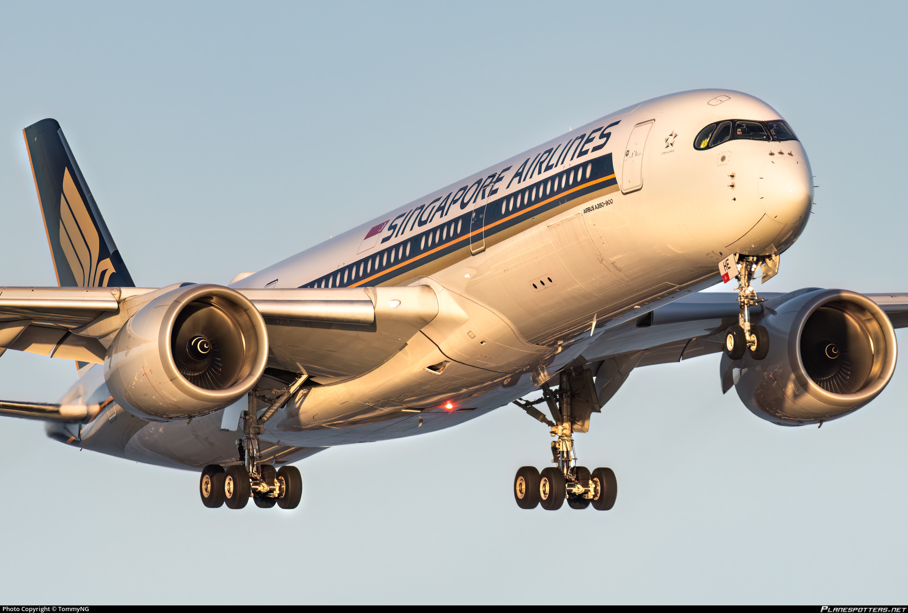
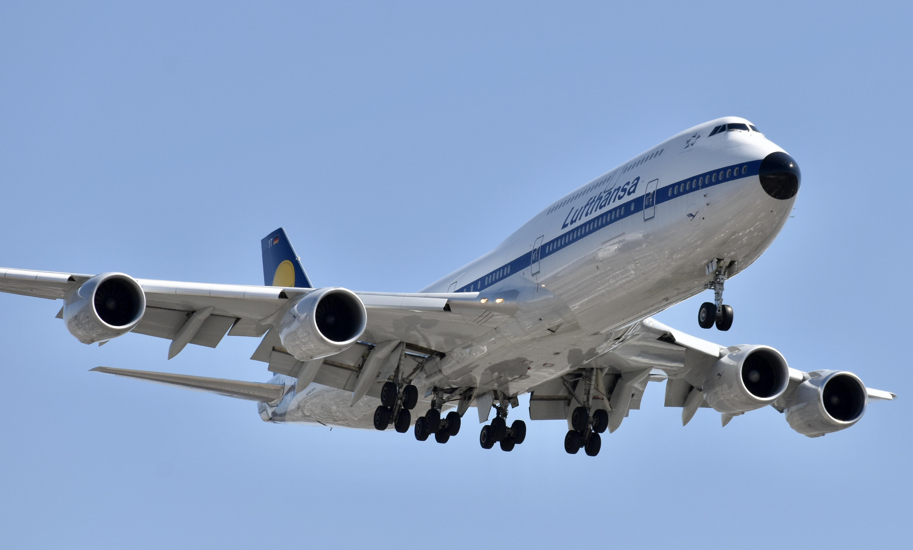
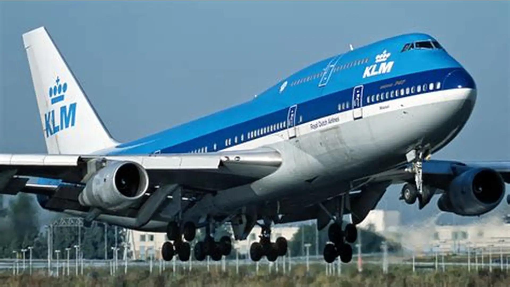
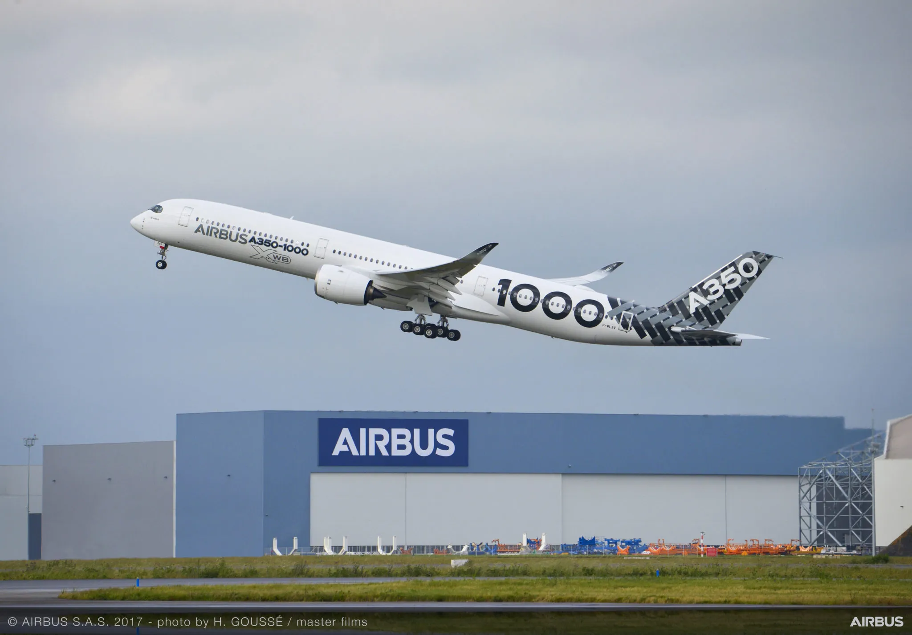

Visual Poetry of Flight





Discover the beauty, emotion and design behind the world of flight. Aviation is more than transportation — it is sculpture in motion.




On December 17, 1903, Orville and Wilbur Wright achieved the first powered, controlled flight in Kitty Hawk, North Carolina. The Wright Flyer stayed airborne for 12 seconds and marked the beginning of modern aviation.
Aircraft evolved rapidly from reconnaissance machines into fighter planes and bombers. Engineering innovation accelerated dramatically during wartime.
Commercial aviation emerged. Streamlined metal aircraft became symbols of speed, modernity, and global connection. Airlines began connecting continents.
Jet propulsion was developed. Aircraft became faster, stronger, and strategically essential. Aviation technology advanced faster than ever before.
Chuck Yeager broke the sound barrier in the Bell X-1, proving supersonic flight was possible and opening a new era of aerospace exploration.
Aircraft such as the Boeing 707 and later the Boeing 747 revolutionized air travel. The Concorde introduced commercial supersonic passenger flights.
Today’s aircraft use composite materials, fly-by-wire systems, and extremely efficient turbofan engines. Sustainability, electric aircraft, and hydrogen propulsion define the next frontier.